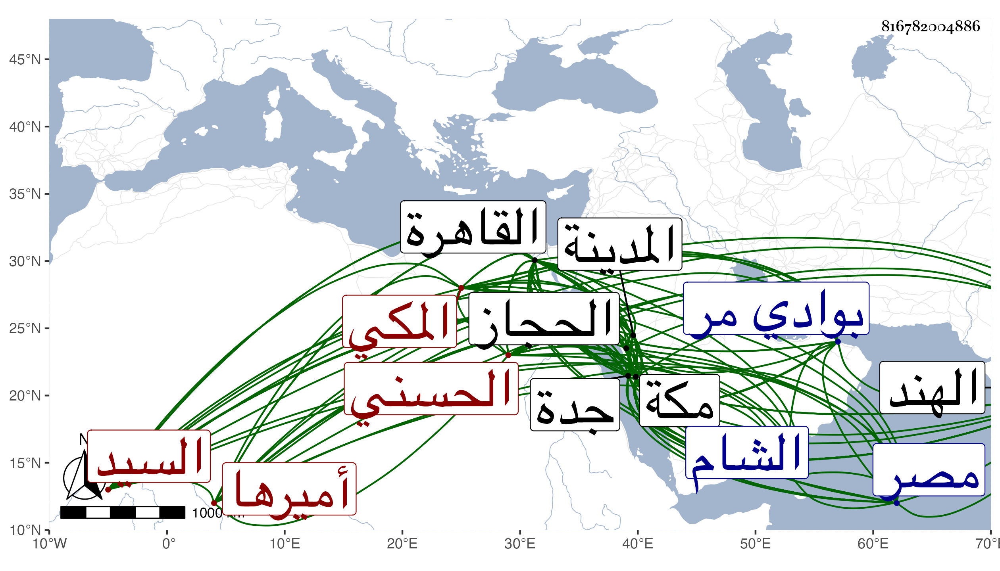

0902Sakhawi.DawLamic.ITO20230111-ara1.EIS1600.816782004886
Biography ID: 816782004886
417
حسن بن عجلان بن رميثة بن أبي نمى محمد بن أبي سعد حسن بن علي ابن قتادة بن إدريس بن مطاعن السيد البدر أبو المعالي الحسني المكي أميرها ونائب السلطنة بالبلاد الحجازية . ولد في سنة خمس وسبعين وسبعمائة بمكة ونشأ بها في كفالة أخيه أحمد فلما مات قدم القاهرة في أوائل سنة تسعين لتأييد أمر أخيه علي وعاد إلى مكة في ثاني ربيعيها أو الذي يليه ومعه جماعة من الأتراك أخيه ثم سافر مع أخيه ورام الأمر لنفسه فلم يمكنه إلا بعد موته وكان إذ ذاك معتقلا بالقلعة ، ووصل مكة في ربيع الآخر سنة ثمان وتسعين ومعه يلبغا السالمي مسفرا وعدة أتراك يزيدون على المائة أو دونها ومن الخيول دون المائة ، ولم تتم السنة حتى وقع بينه وبين بني حسن قتلة أخيه مقتلة كان الظفر فيها له بحيث لم يقتل ممن معه غير مملوك وعبد ، وقتل من أشراف الفريق الآخر سبعة ومن أتباعهم نحو الثلاثين ، وعظم بذلك جدا وساس الأمور بجدة مع التجار حتى قدومها بعد تركهم لها ، واستمر في نمو وزيادة وهيبة في القلوب إلى أن ناب عن السلطنة بالأقطار الحجازية واستناب بالمدينة عجلان بن نغير بن جماز بن منصور وخطب له على منبرها قبل عجلان وبعد السلطان ثم عزل في أثناء سنة ثمان عشرة بالسيد رميثة بن محمد بن عجلان ثم أعيد في التي تليها ثم استعفى وسأل في استقرار الأمر لولديه بركات وإبراهيم وأنهما أولى بالامرة منه لقوتهما وضعف بدنه ورغبته في التفرغ للعبادة وتكرر منه ذلك مرة بعد أخرى ويقال له لسنا نثق في أمر مكة إلا بك وأن أردت ذلك فاستنب أنت من شئت ، وباشر خدمة المحمل والأمراء إلى أن صرف في سنة سبع وعشرين بالشريف علي بن عنان بن مغامس ولم يلبث أن أعيد في موسم التي تليها واجتمع بأمراء الحاج ، وحج وسافر إلى القاهرة وكانت منيته بها في جمادى الأولى سنة تسع وعشرين ودفن بالصحراء بحوش الأشرف برسباي وكان فيه خير كثير واحتمال وحياء ومروءة عظيمة وصدقات وصلات وله مآثر منها رباط للفقراء بالقرب من المسجد الحرام وآخر بأجياد واستأجر البيمارستان المنصوري بالجانب الشامي من المسجد والقيسارية المعروفة بدار الإمارة وعمرهما وزاد في البيمارستان ما كثر النفع به إلى غير ذلك كتجويد رباط رامشت ، وانفرد بذلك كله عن أمراء مكة الأشراف وملك من العقار بوادي مر كثيرا ومن العبيد نحو خمسمائة . ذكره التقي الفاسي في نحو كراسين من مكة والتقي بن فهد في معجمه وقال أنه أجاز له جماعة من مصر والشام حدث عنهم ، وخرج له التقي نفسه أربعين حديثا حدث بشيء من أولها ، وذكره شيخنا في أنبائه باختصار وأنه قدم صحبة قرقماش من الحجاز في المحرم فاجتمع بالسلطان وقرره في الامرة على عادته والتزم بثلاثين ألف دينار أحضر منها خمسة وأقام ليتجهز فتأخر سفره إلى يوم الخميس سادس عشر جمادى الآخرة فمات بعد أن تجهز فيه وأخرج أنفاله ظاهر القاهرة وقد زاد على الستين وكان أول ما ولى الامرة بعد قتل أخيه علي في ذي القعدة سنة سبع وتسعين ، وكانت مدة إمرته اثنتين وثلاثين سنة سوى ما تخللها من ولاية غيره وقدم ولده بركات في رمضان فالتزم بما بقي على والده وأن يحمل كل سنة عشرة آلاف دينار مع ما جزت به العادة من كون مكس جدة له وما تجدد من مراكب الهند يختص بالسلطان ، وطول المقريزي في عقوده ترجمته .
